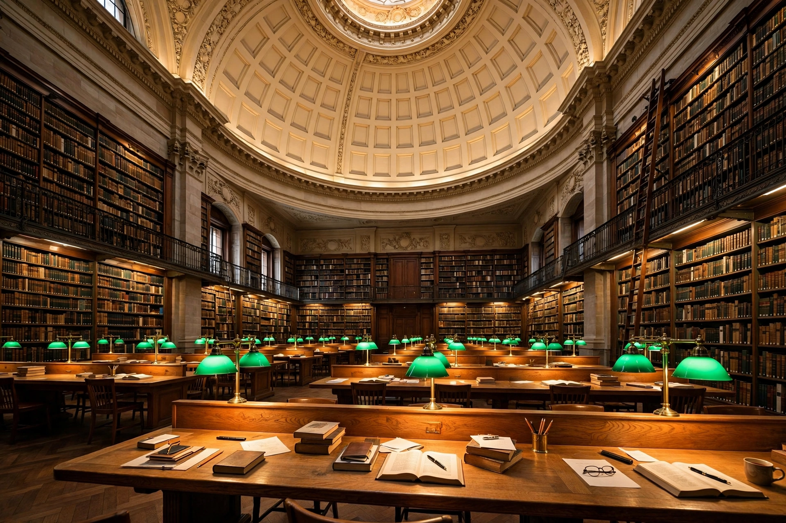

National library
A national library is a library established by a government as a country's preeminent repository of information and knowledge. Unlike public libraries, national libraries rarely allow citizens to borrow books, and they typically include numerous rare, valuable, or significant works. A national library is generally notable for its size compared to that of other libraries in the same country. Some national libraries may be specialised in certain aspects, such as the preservation of a national imprint through legal deposit.

Functions
National libraries are usually responsible for collecting and preserving, under legal deposit legislation, all publications produced within the country; compiling the national bibliography; maintaining union catalogues; and providing leadership, standards and bibliographic services for the national library system. Many also serve as centres for research and as the country's seat of IFLA and ISBN/ISSN agencies. Historic examples include the British Library, the Bibliothèque nationale de France, the Library of Congress — the largest library in the world, serving as the de facto national library of the United States — and the National Diet Library of Japan.
History
The concept descends from royal and state collections opened to scholars, such as the French royal library made a legal deposit library by the Ordonnance de Montpellier of 1537. Sir Anthony Panizzi's 19th-century vision of the British Museum Library as a comprehensive national collection shaped modern ideas of the national library's role. The International Federation of Library Associations and Institutions (IFLA) coordinates cooperation among national libraries worldwide.